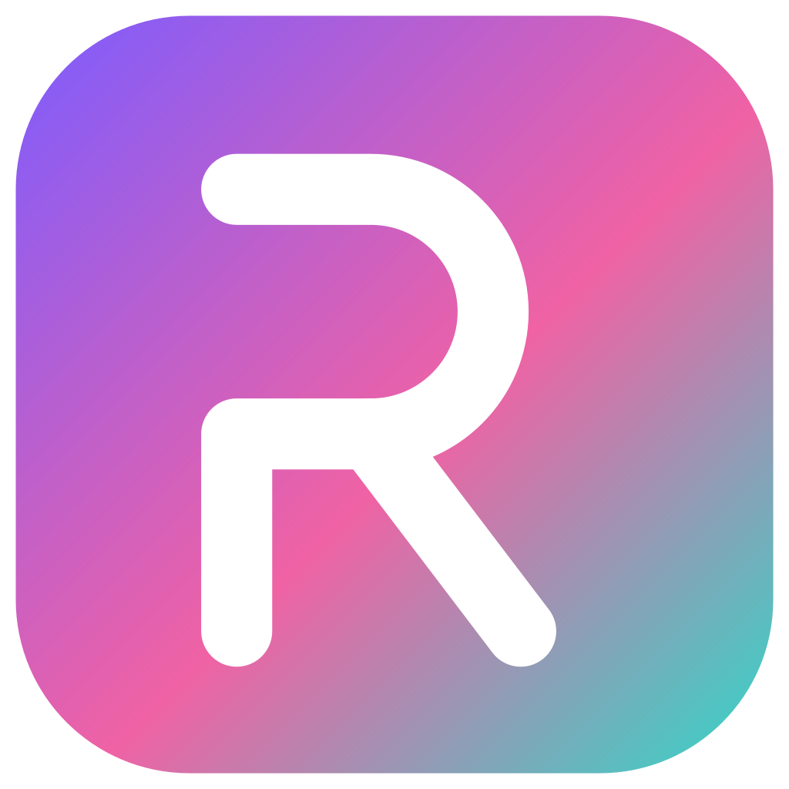
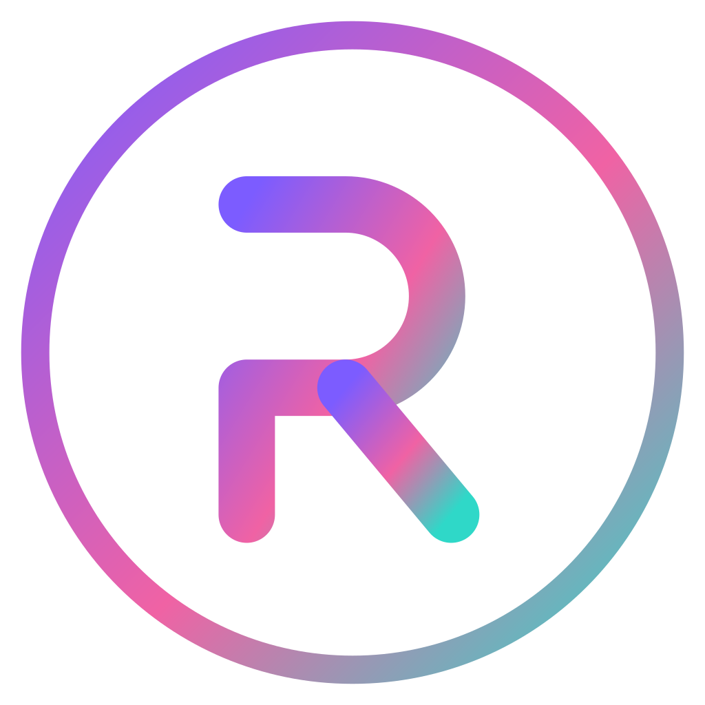
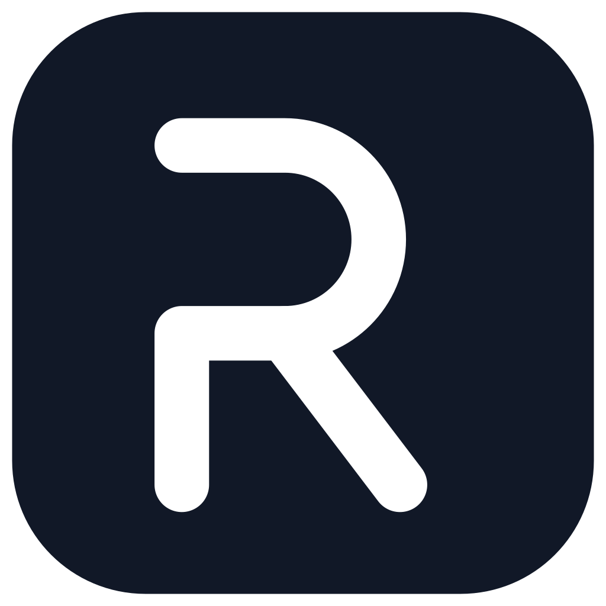
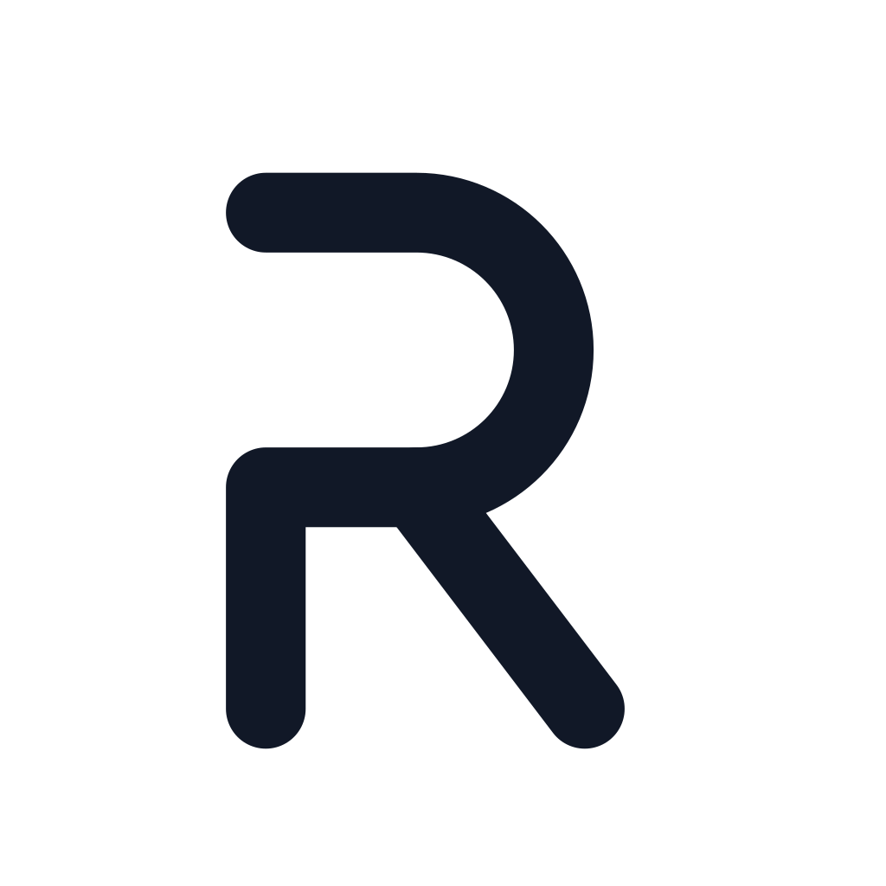

پیشنمایش طراحی نشان R — همان هندسه در اسپلش بومی اندروید و اسپلش وب محصول پیادهسازی شده است.




0.00s هالهٔ نور + ورود نشان0.35s رسم بخش اصلی R0.95s رسم پای R1.25s جرقه1.50s نام «rahyar AI»1.80s شعار فارسی~2.4s محو نرم و ورود به اپ (اندروید؛ لمس = ردشدن)~1.85s پایان در وب (کلیک = ردشدن؛ فقط شروع سرد)برای تکرار دمو، صفحه را رفرش کنید (ویدیوی اجرای واقعی محصول در بستهٔ تحویل موجود است).